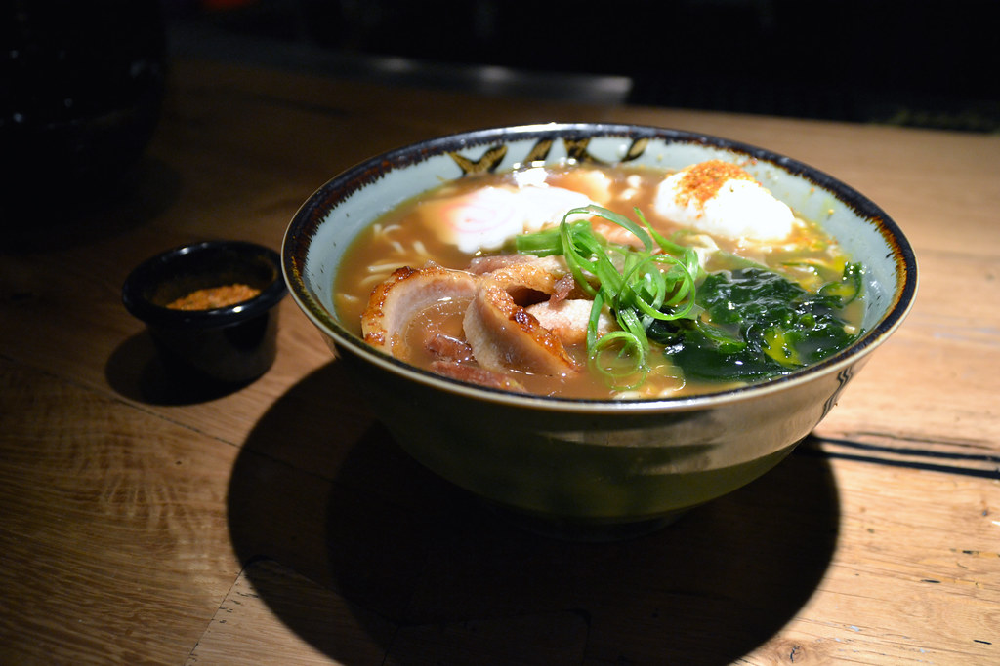

Noodle Soup

Description
A recipe for making a quick soup with leftover vegetables. Substitute in any aromatics for onions, mushrooms and carrots.
Ingredients
- 8 oz of mushrooms( or more if you like )
- 1 large onion or three shallots
- 2 large carrots
- One tablespoon of butter
- One tablespoon canola oil or olive oil
- 1/4 cup of soy sauce
- 1/2 cup mirin
- 1 cup sake
- Four cups of miso broth/li>
- Two bundles of soba noodles
- Chili flakes and/or other seasoning as desired
- 1-2 soft boiled eggs if desired
Steps
- Chop the aromatics roughly. If using sliced mushrooms, leave them as they are.
- Heat a stockpot over medium heat. Add butter and oil. Saute mushrooms for about 10 minutes, until throughly cooked.
- Add remaining aromatics and any seasonings being used and cook until caramelised.
- Deglaze the pan with sake. Add mirin, soy sauce and miso broth.
- Bring the soup to a boil and immediatedly turn the heat back down to medium. Add the noodles.
- Leave on the heat for about five minutes or until noodles are fully cooked. Serve.